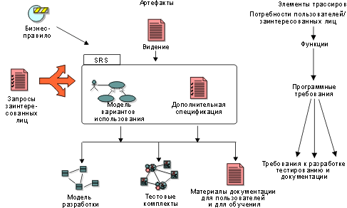
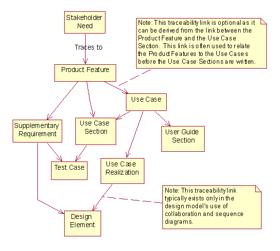

| Концепция: Трассируемость |
 |
|
| Связанные элементы |
|---|
ВведениеТрассируемость - это возможность соотнести элемент проекта с другими элементами, особенно связанными с требованиями. Элементы проекта, включаемые в понятие трассируемости, называются элементами трассируемости. Типичные элементы трассируемости - это типы требований, элементы аналитических и проектных моделей, тестовые рабочие продукты, документация для пользователей и учебные материалы, как показано на рисунке.  Структура трассируемости. С каждым элементом трассируемости связан собственный набор атрибутов (см. Атрибуты требований), который применяется для анализа состояния, преимуществ, рисков и прочих факторов, связанных с элементом. Назначение трассируемостиТрассируемость позволяет выполнить следующее:
Трассируемость помогает понять, как входные требования, такие как бизнес-правила и запросы заинтересованных лиц, преобразуются в спецификации ключевых потребностей заинтересованных лиц и пользователей и системные функции, как описано в документе Видение. В свою очередь, модель варианта использования описывает, как эти возможности реализуются в функциональной системе. Особенности взаимодействия системы с внешней средой описаны в вариантах использования, наряду с прочими важными требованиями, в том числе и не относящимися к функциям, и ограничениями проекта согласно вспомогательным спецификациям. Трассируемость также обеспечивает возможность контроля за тем, как эти спецификации воплощаются в проекте, как они тестируются, и как документируются для пользователя. Для больших систем варианты использования и вспомогательные спецификации вместе могут составить спецификацию требований к программному обеспечению (SRS) для какой-либо функции или подсистемы. Ключевым в работе с изменениями требований является понятие "недостоверной" связи трассируемости. Когда изменяется требование или другой элемент трассируемости, все связи трассируемости, ведущие к этому элементу, помечаются как недостоверные. Ответственные за эти связи должны будут изучить изменение и определить, требуется ли изменение также и соответствующих элементов. Это понятие также способствует анализу влияния потенциальных изменений. Элементы трассируемости также позволяют ответить на следующие вопросы:
Пример: В документе Видение для системы по утилизации отходов может быть указана следующая возможность:
Эта возможность трассируется в варианте использования "Добавить новый тип бутылки":
Такая трассируемость позволяет удостовериться, что все возможности были учтены в вариантах использования и вспомогательных спецификациях. Типичные элементы трассируемостиНиже перечислены наиболее распространенные элементы трассируемости:
Полезно также трассировать и другие элементы, такие как бизнес-правила и замечания. Типичный вариант трассируемости показан на следующей схеме:  Эта диаграмма отражает трассируемость только в отношении требований. Могут также существовать и другие элементы трассируемости, не показанные на схеме: элементы проекта трассируются в элементах реализации, могут быть предусмотрены тестовые наборы для проекта и реализации и т.д. |
© Copyright IBM Corp. 1987, 2006. Все права защищены.. |